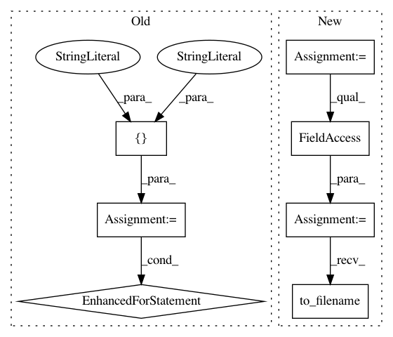

09e20914e3b49c264cb41262ea24fd54121e0b84,plot_poldrack_space_net.py,,,#,6
Before Change
////// Fit and predict ////////////////////////////////////////////////////////////////////////////////////////////////////////////////////
from nilearn.decoding import SpaceNetRegressor
penalties = ["Smooth-LASSO", "TV-L1"]
decoders = {}
for penalty in penalties:
decoder = SpaceNetRegressor(memory=mem, mask=mask_img, verbose=2,
penalty=penalty)
decoder.fit(X_train, y_train) // fit
decoders[penalty] = decoder
////// Visualization //////////////////////////////////////////////////////////////////////////////////////////////////////////////////////////
import matplotlib.pyplot as plt
from nilearn.image import mean_img
from nilearn.plotting import plot_stat_map
background_img = mean_img(X_train)
After Change
penalty = "TV-L1"
l1_ratio = .3
alpha = None
decoder = SpaceNetRegressor(memory=mem, mask=mask_img, verbose=2,
n_jobs=int(os.environ.get("N_JOBS", 1)),
l1_ratio=l1_ratio, penalty=penalty, alpha=alpha,
screening_percentile=100., tol=1e-8,
max_iter=1000)
decoder.fit(X_train, y_train) // fit
coef_niimg = decoder.coef_img_
coef_niimg.to_filename("poldrack_%s(l1_ratio=%g, alpha=%s)_weights.nii" % (
penalty, l1_ratio, alpha))
////// Visualization //////////////////////////////////////////////////////////////////////////////////////////////////////////////////////////
import matplotlib.pyplot as plt
from nilearn.image import mean_img
In pattern: SUPERPATTERN
Frequency: 3
Non-data size: 7
Instances
Project Name: nilearn/nilearn
Commit Name: 09e20914e3b49c264cb41262ea24fd54121e0b84
Time: 2015-07-28
Author: elvis.dohmatob@inria.fr
File Name: plot_poldrack_space_net.py
Class Name:
Method Name:
Project Name: nilearn/nilearn
Commit Name: 311ac284d99ea7243e0918949f3a499a7a93fab5
Time: 2015-11-29
Author: gael.varoquaux@normalesup.org
File Name: examples/decoding/plot_haxby_space_net.py
Class Name:
Method Name:
Project Name: nilearn/nilearn
Commit Name: 9df0afdbb76a48fe58b29af3d361c3cfd0a10e50
Time: 2015-07-28
Author: elvis.dohmatob@inria.fr
File Name: plot_poldrack_space_net.py
Class Name:
Method Name: